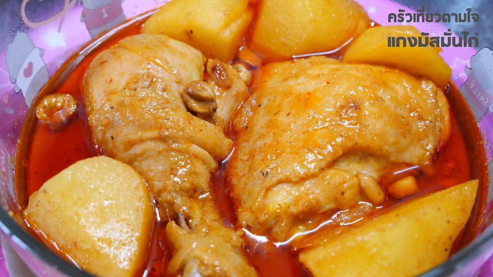

แกงมัสมั่นไก่

วัตถุดิบ
- น่องไก่ใหญ่ 5 น่อง
- พริกแกงมัสมั่น 200 กรัม
- หัวกะทิ 2 ถ้วย
- หางกะทิ 3 ถ้วย
- หอมหัวใหญ่ 2 หัว
- มันฝรั่ง 500 กรัม
- เม็ดมะม่วงหิมพานต์ 200 กรัม
- น้ำตาลมะพร้าว 2 ช้อนโต๊ะ
- เกลือ 1 หยิบมือ
- น้ำปลา ½ ช้อนโต๊ะ
- น้ำมะขามเปียก 4 ช้อนโต๊ะ
TOP
วิธีทำ
STEP 1 : เคี่ยวพริกแกง
-
ตั้งหม้อให้ร้อน ใส่กะทิลงไป เคี่ยวสักพักจนเดือด
-
ใส่พริกแกงลงไป เคี่ยวจนกะทิแตกมัน
Step 2 : เติมเครื่องลงไปผัด
-
ใส่หอมใหญ่หั่น ลงไปผัด
-
ใส่น่องไก่ลงไป ผัดคลุกให้เข้ากับน้ำแกง
-
ส่เม็ดมะม่วงหิมพานต์ลงไป (ควรเลือกเม็ดมะม่วงหิมพานต์แบบอบธรรมดานะคะ ถ้าอบเกลือแบบนี้จะเค็มไปหน่อยนะคะ)
-
ใส่มันฝรั่งลงไปผัด
Step 3 : เคี่ยวจนไก่นุ่ม
-
เติมหางกะทิ
-
เคี่ยวจนไก่นุ่ม ประมาณ 45 - 60 นาที หมั่นคนหน่อยนะคะ ไม่งั้นก้นหม้อจะไหม้ได้
Step 4 : ปรุงรสชาติ
-
เติมน้ำตาลมะพร้าว
-
เติมน้ำมะขามเปียก
-
เติมน้ำปลา และเกลือ
-
เคี่ยวต่อให้เข้ากันดี เป็นอันเสร็จพิธีค่ะ ตักจัดเสิร์ฟได้เลย
TOP
ตารางโภชนาการ
| สารอาหาร |
ปริมาณ |
หน่วย |
| โปรตีน |
19 |
g. |
| ไขมัน |
7 |
| คาร์โบไฮเดรต |
24 |
| โซเดียม |
1100 |
| หมายเหตุ |
|
|
|
|
|
TOP
ที่มา :
wongnai